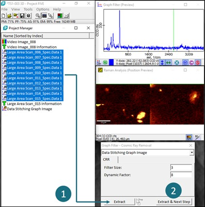
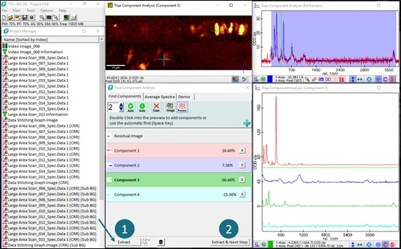
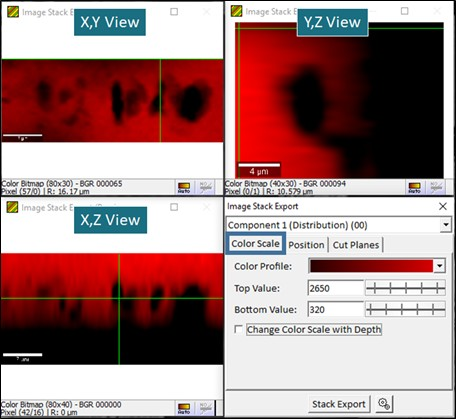
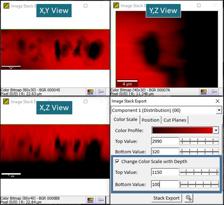
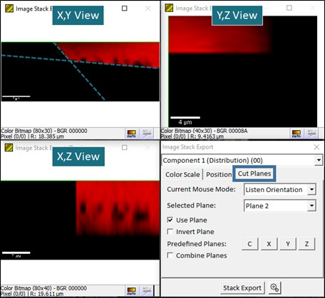

|
三维数据分析
|
本文介绍如何在 WITec Project 中准备三维堆栈数据以供导出。下面给出了数据分析过程的示例。分析一组数据的最佳方式取决于具体数据和您的要求，因此以下过程可能需要修改和调整。
我们的目标是对所有层应用相同的分析步骤，如背景扣除和真组分分析（TCA），使用相同的参数。然而，TCA 或其他分析工具需要整个数据集才能找到所有组分。解决方案是将各层拼接在一张图像中，并使用此单个拼接对象设置分析参数。然后，通过将单个层拖放到提取按钮上，将分析应用于所有单个层。
如果堆栈层数很多，最好只选择少数有代表性的层（例如 2 或 4 层）进行拼接，这将大大加快分析速度。
此处建议的过程使用真组分分析；然而，也可以使用其他工具，如拟合工具。
图中的数据显示了安装在载玻片（蓝色）上的石榴石样品（红色）中的一些包裹体（绿色、黄色）。
数据分析


数据导出


